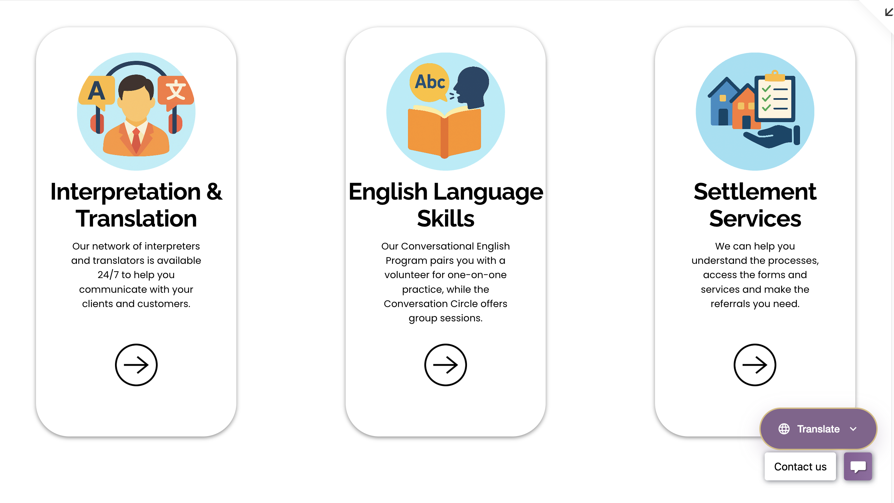
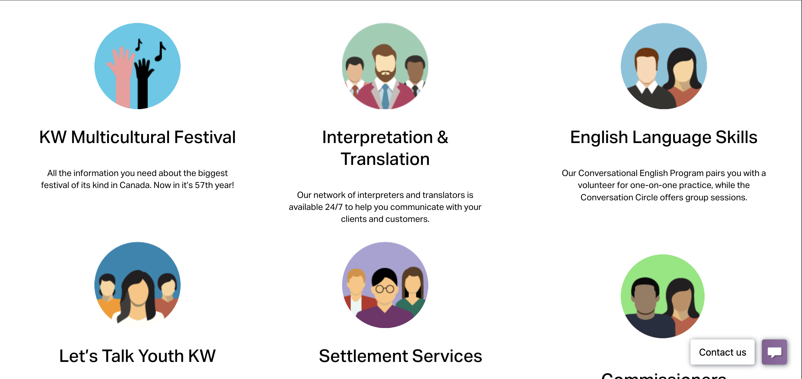
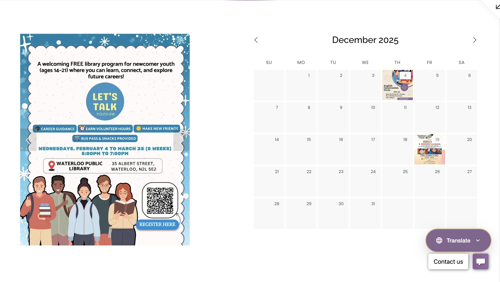
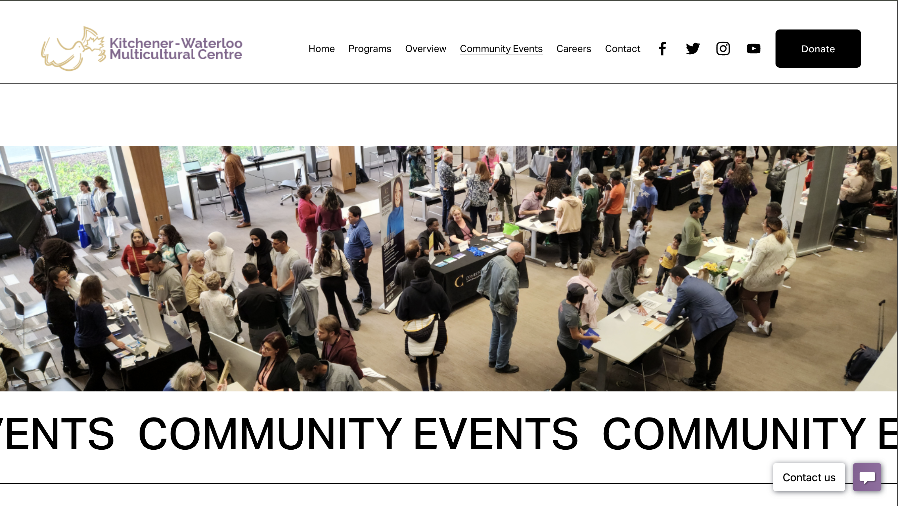
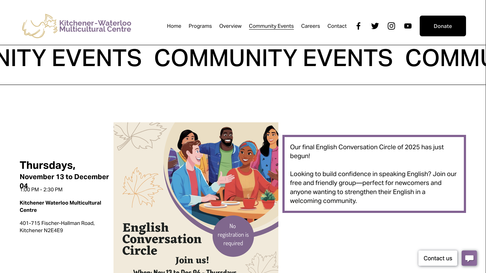
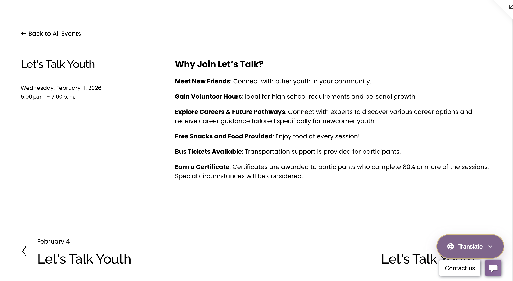
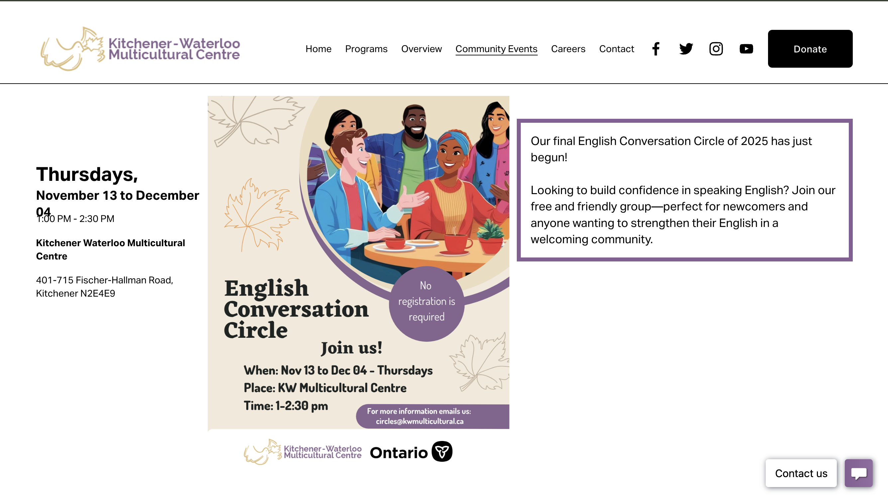
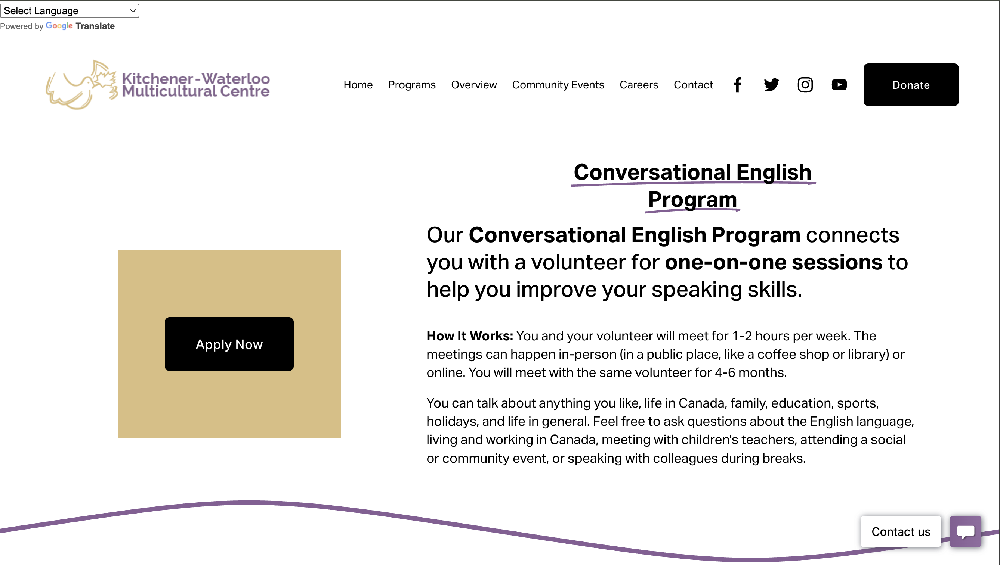
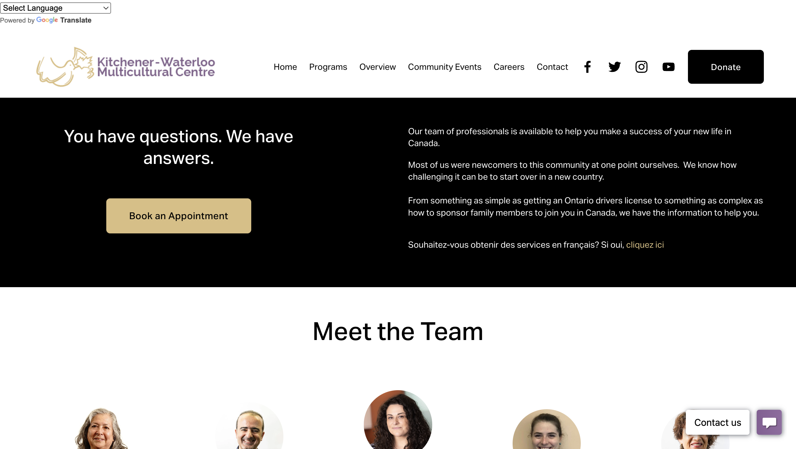

Designing for Dignity
A human-centered redesign for the Kitchener-Waterloo Multicultural Centre, transforming how newcomers access vital settlement services through empathy and accessibility.
COMMUNITY IMPACT • AODA COMPLIANCE • USER ADVOCACY • TRUST & SAFETY • AODA COMPLIANCE • USER ADVOCACY •COMMUNITY IMPACT • AODA COMPLIANCE • USER ADVOCACY • TRUST & SAFETY • AODA COMPLIANCE • USER ADVOCACY •COMMUNITY IMPACT • AODA COMPLIANCE • USER ADVOCACY • TRUST & SAFETY • AODA COMPLIANCE • USER ADVOCACY •
The Problem
The Kitchener Waterloo Multicultural Centre (KWMC) supports newcomers navigating settlement, employment, and community services, yet its website was unintentionally creating friction. Stakeholder conversations and content reviews surfaced recurring issues around unclear eligibility requirements, confusing service pathways, and inconsistent or inaccessible content. These gaps often led users to apply for programs they were not eligible for, contact the wrong teams, or rely on staff for basic navigation.
The Mission
Reframe the website as a digital front desk rather than a static information site. The redesign focused on improving structural clarity, surfacing eligibility information earlier, guiding users through clearer service flows, and using more accessible language and authentic community representation. The goal was to help users more confidently identify the services that fit their needs while reducing confusion and operational friction for staff.
The "Meeting Marathon"
I didn't guess what the community needed. I spent 4 months asking the people who serve it.
01. Deep Discovery (30-40 Meetings)
I started by meeting with almost everyone in the company,roughly 30 to 40 sessions. I met with every department (Settlement, Translation, Employment, etc) to understand their specific demands. We uncovered key issues, like the hidden "Translation Tool" and the need for clearer "Pre-Employment" eligibility criteria.
02. Benchmarking & Inspiration
I browsed over 20+ government and non-profit organization websites. I wasn't just looking for inspiration; I was analyzing how they handled accessibility, information architecture, and trust signals for vulnerable populations.
03. Drafting & Continuous Feedback
As the redesign progressed, I worked through ongoing feedback cycles with teams across departments to refine both structure and functionality. Alongside improving navigation clarity, I introduced supporting tools such as a more visible translation option, a site wide search, and department specific flowcharts to improve accessibility, readability, and users’ understanding of service processes. We also moved away from generic visual elements, focusing instead on clearer content organization and more intuitive page flows to make the site easier to understand and navigate.
04. Validation (The Final 30-40 Meetings)
When the website was effectively "done," I ran another marathon of 30-40 meetings. This wasn't just a presentation; it was a working session. We went line-by-line to fix wordings, ensure safety/privacy for staff profiles, and gather final opinions to ensure 100% buy-in.
Stakeholder Interviews
Uncovering Departmental Needs
Competitive Audit
Analyzing Accessibility Standards
Iterative Drafting
Refining Content & Navigation
Final Validation
Securing 100% Consensus
Visual Evidence
From identified pain points to solved design problems.
The "Low-Code" Challenge
I had to balance high-end visual clarity with long-term maintainability. Because the staff has no coding background, I strictly limited custom HTML/CSS to structural elements only. All editable content areas prioritize native Squarespace blocks to ensure the team can easily update the site after my departure.
1. Homepage Hierarchy
 After
After
 Before
Before
2. Visual Authenticity

After
Before3. Event & Schedule Clarity

After
Before After
After

Before
After
Before4. Program Engagement & Trust
 After
After

Before5. Process Transparency
 After
After

BeforeBeyond the Pixels
Active Listening
Navigating conflicting feedback from all departments taught me that listening is the most important design tool. For example, we created specific "Do's and Don'ts" resources for Interpreters based solely on staff requests.
Accessibility First
I learned to view code not just as function, but as access. Ensuring high contrast, clear hierarchy, and semantic HTML is a form of digital empathy.
Service Design
This wasn't just a website; it was a digital front desk. I learned how to translate bureaucratic processes (like Pre-Employment eligibility) into a human-friendly experience.